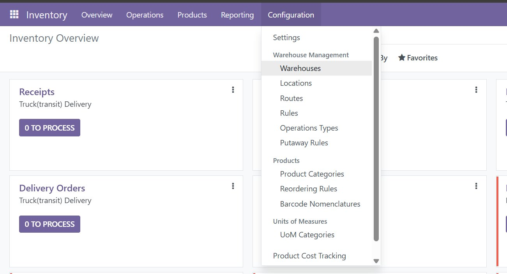
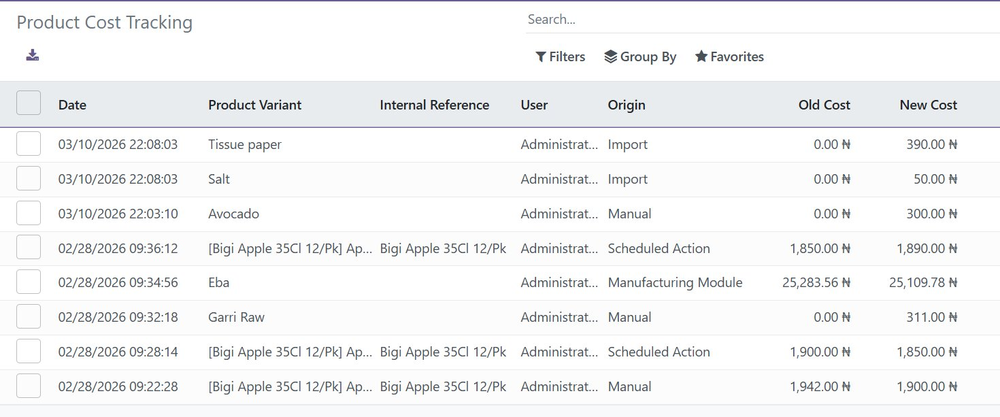

Never wonder again who changed your product cost, when they changed it, or why. A complete, automatic audit trail — built right into Odoo.
Install once, and every future cost change is automatically captured with full context — no extra setup required.
Every change to the standard_price field is recorded automatically, including old value, new value, timestamp, and the user who made the change.
Automatically identifies where the change came from — manual entry, imports, scheduled actions, purchase orders, manufacturing, and more.
Instantly shows the cost difference in both absolute value and percentage, so you can immediately spot significant price movements.
Access the full cost history directly from the product form view with a single click. History available on both templates and variants.
Tracks the company context on every record. Works correctly in multi-company Odoo setups out of the box.
All tracked data is stored in standard Odoo records, meaning you can filter, group, and export cost history to Excel with built-in Odoo tools.
This is exactly what you get after installing — no mock-ups, no demo data.
📍 Access from Inventory → Configuration → Product Cost Tracking

📋 Full audit trail — date, product, user, origin, old cost, new cost, difference

No configuration needed. The module hooks into Odoo's write mechanism and silently logs every cost change in the background.
Install via the Odoo App Store. No extra settings, no configuration wizards. It works immediately on install.
Any time standard_price is updated — whether by a user, a scheduled action, an import, or another module — a tracking record is created.
Once cost changes are recorded, a smart button appears on the product showing the total number of changes. Click it to see the full history filtered to that product.
All cost tracking records are also accessible under Inventory → Configuration → Product Cost Tracking for a company-wide overview.
Each tracking entry is a full Odoo record with these fields, searchable, filterable, and exportable.
| Field | Description | Type |
|---|---|---|
| old_cost | Cost value before the change | Float |
| new_cost | Cost value after the change | Float |
| cost_difference | Absolute difference (new − old) | Float (computed) |
| cost_difference_percent | Percentage change | Float (computed) |
| user_id | User who triggered the change | Many2one |
| origin | Source of the change (see below) | Char |
| company_id | Company context at time of change | Many2one |
| create_date | Exact date and time of change | Datetime |
| notes | Optional manual notes field | Text |
The module uses multi-level detection — context, active model, and call stack inspection — to correctly label the source of every change.
Built following Odoo best practices. No external dependencies, no overrides of core views, no data loss risk.
product.product and product.template — no core model modificationwrite() override with duplicate-prevention context flag _cost_tracking_donesudo() to ensure no permission errors regardless of user rolefloat_compare with Product Price decimal precisionupdate_cost_from_purchase(), update_cost_from_inventory(), etc..with_context(cost_tracking_origin='My Origin')product and stock — no additional module requirementsNo. The module begins tracking from the moment it is installed. Any cost changes that happened before installation are not captured — only future changes are logged.
No. The tracking logic only runs when standard_price is part of a write operation. For all other writes to product records, there is zero overhead.
Yes. Cost history is tracked at the product variant level (product.product) and linked to the parent template (product.template). You can view history from either.
The smart button only appears after at least one cost change has been recorded for that product. On a fresh install, change any product's cost and save — the button will appear immediately.
Yes. Tracking records are standard Odoo records. Users with appropriate permissions can delete individual records. We recommend restricting this via access rights in production.
Tracking records use ondelete='cascade' — if the product is deleted, its cost tracking records are automatically deleted as well.
Email us at opeyemiajetunmobi9@gmail.com and we will respond within 1–2 business days.